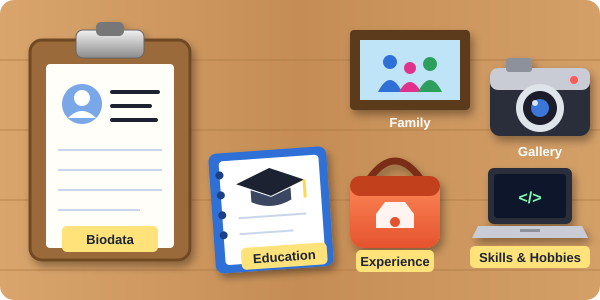

Site Map
- Home – welcome and desk map
- Biodata – my details
- Education – schools and diploma
- Experience – food delivery work
- Skills & Hobbies – what I can do and what I enjoy
- Family – my mother and sisters
- Gallery – photos, video and sound
Visual site map
Click an object on the desk to open the page.

About the author
Abdul Rahman bin Mohd Yusuf, student of Diploma in Information Management, UiTM Segamat (current CGPA 3.52). Contact: [2024207478@student.uitm.edu.my].
Accessibility: use the A- and A+ buttons at the top to change text size. All images have text descriptions.